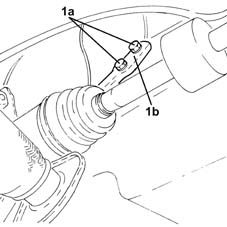
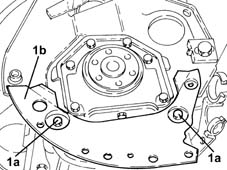
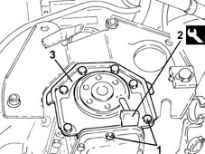
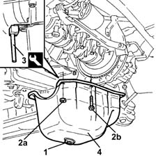
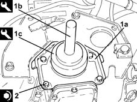
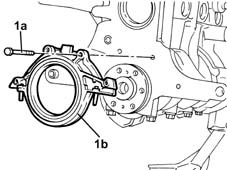
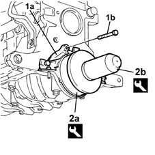
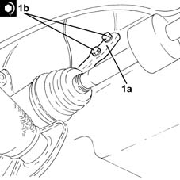

1020D30 oil seal cover, fly wheel side - r + r and replace seals
- Path
- Procedures > 10 ENGINE > 1020 CRANKCASE SUMP AND COVERS > 1020D oil seals on crank shaft > 1020D30 oil seal cover, fly wheel side - r + r and replace seals
- Kind
- repair procedure (removal / refitting; the operation number is the code)
- Applies to
- engines: 1.2 8v, 1.2 16v, 1.4 16v; all production periods
- Interactive page
- https://sloeber94.github.io/elrnDB-lYpsln/en/#/2428872
Applies to: engines: 1.2 8v; all production periods
 Removing
Removing
 Refitting
RefittingProceed with removal 1072C44 exhaust manifold heat shield on bulkhead - r+r .
Proceed with removal 1072C16 exhaust manifold with catalytic converter - r r .
1. Undo the fixing bolts (1a) and partly remove the bracket connecting the manual gearbox to the engine (1b).

Applies to: engines: 1.2 16v; all production periods
Removing
Refitting1. Undo the bolts (1a) and remove the engine flywheel protection (1b).

Applies to: engines: 1.4 16v; all production periods
Removing
Refitting1. Undo the flywheel side oil seal cover.
2. Cut the sealant between the flywheel side oil seal cover and the crankcase sump using the tool.
 | Name | Country |
|---|---|---|
2 | Blade | 1.870.718.000 |
3. Remove the flywheel side oil seal cover

Applies to: engines: 1.2 8v; all production periods
1. Undo the engine oil drain plug and drain the oil into a suitable container.
2. Undo the nuts (2a) and the bolts (2b) fixing the crankcase sump.
3. Use the tool to cut the crankcase sump sealant.
| Name | Country |
|---|---|---|
3 | Blade | 1.870.718.000 |
4. Remove the crankcase sump.

Applies to: engines: 1.2 16v; all production periods
1. Loosen the bolts fixing the flywheel side oil seal cover.
2. Cut the sealant between the flywheel side oil seal cover and the crankcase sump using the tool.
| Name | Country |
|---|---|---|
2 | Blade | 1.870.718.000 |
3. Remove the flywheel side oil seal cover
Applies to: engines: 1.4 16v; all production periods
Refitting
RemovingClean residue traces off the contact surfaces between flywheel side oil seal cover and crankcase sump.
Apply a strip of specified silicon sealant to the contact surface between the crankcase sump and the flywheel side oil seal cover.
 | Type | Component | Name | Qty. |
|---|---|---|---|---|
- | Silicon sealant | Air conditioner compressor | Silicon sealant | - |
1. Place the flywheel side oil cover (1a) back in its housing using the tools (1b) and (1c).
| Name | Country |
|---|---|---|
1b | Grip | 1.860.879.000 |
| Name | Country |
|---|---|---|
1c | Fitting tool | 1.860.881.000 |
2. Tighten the bolts for the oil cover, flywheel side, to the recommended torque.
 | Fastening | Component | Ø | Value (daNm) |
|---|---|---|---|---|
2 | Bolt | FLYWHEEL SIDE COVER | M6 | 1 |

Applies to: engines: 1.2 8v; all production periods
1. Undo the bolts (1a) and remove the oil cover, flywheel side (1b), complete with gasket.

Applies to: engines: 1.2 16v; all production periods
Refitting
RemovingClean sealant residues from the mating surfaces between flywheel side oil seal cover and crankcase sump.
Apply a strip of the recommended silicon sealant to the contact surface between the crankcase sump and the flywheel side oil seal cover.
| Type | Component | Name | Qty. |
|---|---|---|---|---|
- | Silicon sealant | Air conditioner compressor | Silicon sealant | - |
1. Place the flywheel side oil cover (1a) back in its housing using tools (1b) and (1c).
| Name | Country |
|---|---|---|
1b | Grip | 1.860.879.000 |
| Name | Country |
|---|---|---|
1c | Fitting tool | 1.860.881.000 |
2. Tighten the bolts for the oil cover, flywheel side, to the recommended torque.
| Fastening | Component | Ø | Value (daNm) |
|---|---|---|---|---|
2 | Bolt | FLYWHEEL SIDE COVER | M6 | 1 |
Applies to: engines: 1.2 8v; all production periods
Working at the bench, prise up and remove the oil seal from the oil cover, flywheel side.
Applies to: engines: 1.2 16v; all production periods
Place the lower engine flywheel protection back in its housing and secure it using the bolts.
Applies to: engines: 1.2 8v; all production periods
Refitting
Removing1. Refit the flywheel side oil seal (1a) in its seating and tighten the bolts (1b) to the specified torque.
2. Lubricate the new oil sealing ring with engine oil, then refit in its seat using tools (2a) and (2b).
| Name | Country |
|---|---|---|
2a | Fitting tool | 1.860.881.000 |
| Name | Country |
|---|---|---|
2b | Grip | 1.860.879.000 |

Applies to: engines: 1.2 8v; all production periods
Thoroughly clean the contact surfaces of crankcase sump and cylinder block of sealant residues.
Apply silicon sealant around the edge of the crankcase sump.
Refit the crankcase sump
Tighten the nuts and bolts securing the crankcase sumpl to the recommended torque.
| Fastening | Component | Ø | Value (daNm) |
|---|---|---|---|---|
- | Nut | OIL SUMP | M6 | 0.5 |
| Fastening | Component | Ø | Value (daNm) |
|---|---|---|---|---|
- | Bolt | OIL SUMP | M6 | 1 |
Tighten the engine oil drain plug to the specified torque.
| Fastening | Component | Ø | Value (daNm) |
|---|---|---|---|---|
- | - | - | - | - |
1. Refit in its seating the bracket between the manual gearbox/engine (1a) and tighten the bolts (1b) to the specified torque.
| Fastening | Component | Ø | Value (daNm) |
|---|---|---|---|---|
1b | Bolt | GEARBOX/ENGINE COUPLING BRACKET | M8 | (Engine crankcase side) 2.5 ÷ 3.1 |

Applies to: engines: 1.2 8v; all production periods
Proceed with refitting 1072C16 exhaust manifold with catalytic converter - r r .
Proceed with refitting 1072C44 exhaust manifold heat shield on bulkhead - r+r .
Refill the engine oil lubrication system 0010T11 engine oil check level and top up .
Topics linked from this page (3)
- 0010T11 engine oil check level and top up
- 1072C16 exhaust manifold with catalytic converter - r r
- 1072C44 exhaust manifold heat shield on bulkhead - r+r